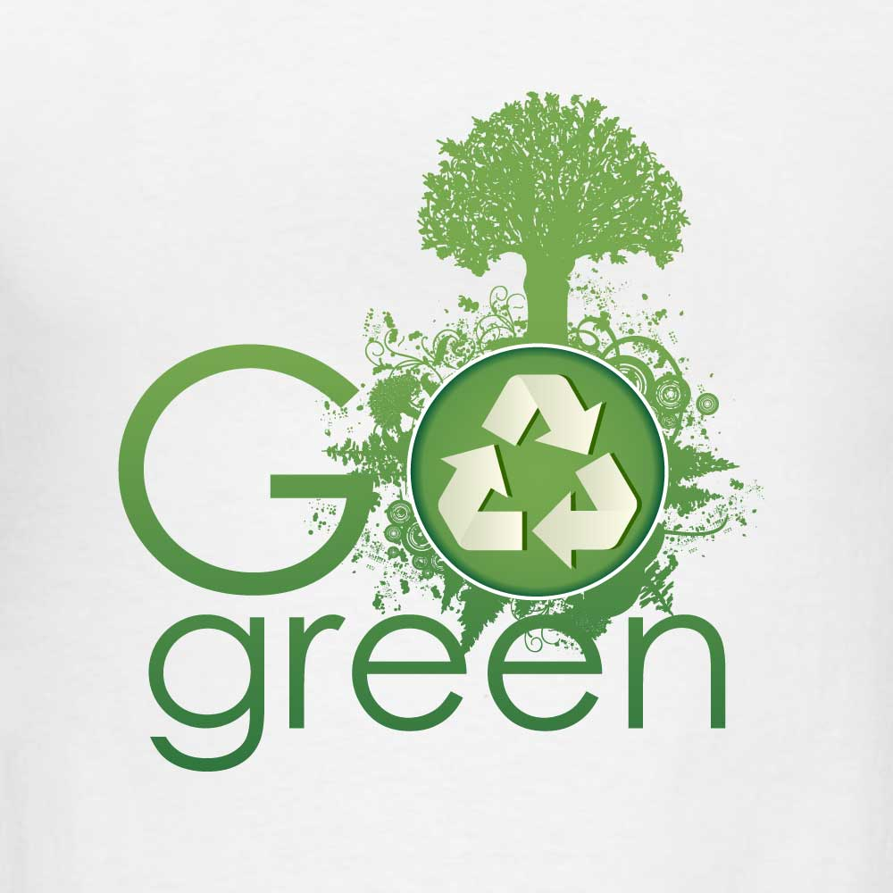
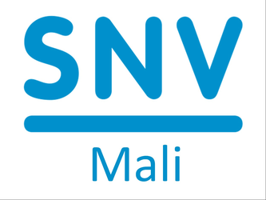
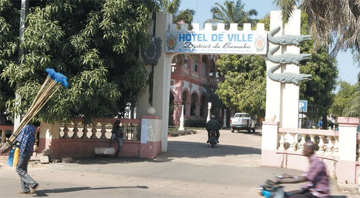
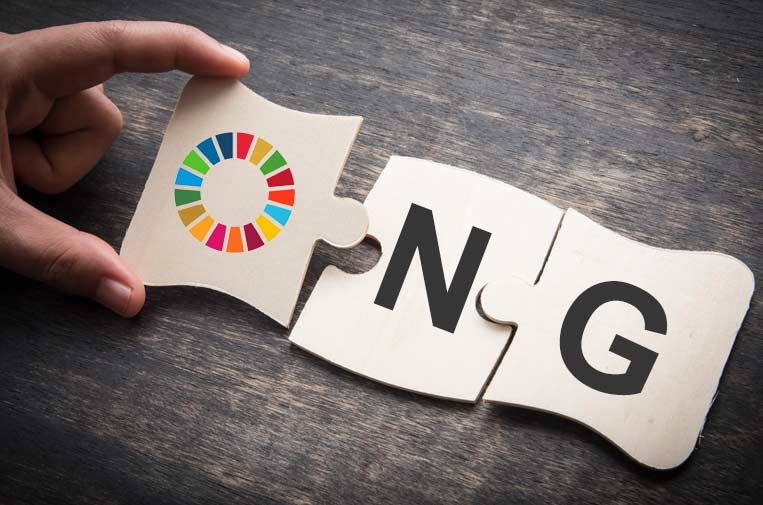

Le Pôle d'Expertise en Compétences Techniques Vertes du District de Bamako (PECTV-D) accompagne la transition écologique locale, l'emploi vert et l’entrepreneuriat durable.
Promouvoir les compétences vertes et l’emploi durable à Bamako
Mis en place lors de l’atelier du jeudi 22 mai 2025, dans la salle de réunion de la mairie du District,
le Pôle d'expertise en compétences techniques vertes de Bamako rassemble des experts et des acteurs
des services d’appui conseil locaux qui apportent un accompagnement technique à la collectivité locale
en matière de transition écologique et de développement durable, notamment sur les sujets liés aux énergies
renouvelables, l'aménagement durable, la gestion des déchets et l’économie circulaire.
La création des pôles d'expertise en compétences techniques vertes dans les collectivités territoriales
au Mali a été initiée par le projet Go Green de la SNV dont les activités sont centrées sur la création
et la promotion de l’Emploi et de l’Entrepreneuriat Vert par et pour les Jeunes au Mali.
L’opérationnalisation de ces pôles d’expertises en compétences techniques vertes est essentielle pour
maximiser leurs impacts sur l'employabilité et le développement des compétences dans les micros petites
et moyennes entreprises.
Le comité de coordination du pôle d'expertise du district de Bamako a pour mission de : développer des
compétences vertes, promouvoir l'emploi vert, appuyer l’entrepreneuriat vert, mener une veille stratégique
et innovante, sensibiliser et plaider en vue d’établir des partenariats et des coopérations au niveau local
pour aller vers une meilleure transition écologique et instituer une base solide de l’économie verte.
L’opérationnalisation de cette nouvelle structure par une décision du District, à l’instar des autres zones
d’intervention de la SNV (Sikasso, Ségou et Mopti) permettra non seulement d’assurer la durabilité des
résultats de la phase pilote du projet Go Green à Bamako mais aussi et surtout d’offrir l’opportunité
de raffermir le partenariat entre la SNV et le district de Bamako.
Nos missions
Développer des compétences vertes
Identifier les besoins en compétences dans les secteurs de l'économie verte, proposer des formations adaptées aux métiers verts émergents, collaborer avec les institutions académiques et les organismes de formation pour intégrer des modules sur les compétences vertes, et valoriser les compétences acquises à travers des certifications et labels reconnus.
Promouvoir l’emploi vert
Créer des cadres d’échange et des plateformes de mise en relation entre employeurs et candidats qualifiés dans l’économie verte, faciliter l’insertion professionnelle des jeunes, accompagner les entreprises dans le recrutement et la montée en compétence de leurs salariés, et sensibiliser les employeurs aux opportunités offertes par l’économie verte.
Appuyer l’entrepreneuriat vert
Accompagner les porteurs de projets et entrepreneurs dans la création et le développement d’entreprises durables, proposer des incubateurs et programmes de mentorat pour les startups vertes, mobiliser des financements et subventions, et faciliter l’accès aux marchés et aux réseaux de partenaires.
Veille stratégique & innovation
Assurer une veille sur les évolutions technologiques et réglementaires liées aux métiers verts, conduire des études sur l’impact des compétences vertes dans l’économie, promouvoir la recherche et l’innovation dans les solutions durables, et formuler des recommandations pour les politiques publiques en matière d’emploi et d’entrepreneuriat verts.
Sensibilisation & plaidoyer
Organiser des événements, ateliers et conférences pour promouvoir les métiers et opportunités de l’économie verte, sensibiliser les acteurs économiques, les collectivités et le grand public aux enjeux du développement durable, et collaborer avec les institutions publiques et privées pour intégrer les compétences vertes dans les stratégies locales.
Partenariats & coopération
Établir des collaborations avec des organismes internationaux, entreprises, ONG et gouvernements, échanger des bonnes pratiques entre acteurs de l’économie verte, et participer à des projets de coopération et de financement pour le développement des compétences vertes.

Projet Go Green (SNV)
Le projet Go Green de la SNV a initié la création
de pôles d’expertise en compétences techniques vertes, dont celui du District de Bamako.
L’objectif est de promouvoir l’emploi et l’entrepreneuriat vert chez les jeunes et d’assurer
la durabilité des résultats par l’opérationnalisation de ces pôles.
Nos Partenaires
Quelques partenaires et acteurs locaux et internationaux collaborant avec le PECTV-D.



Contactez-nous
Coordonnées
Commission PECTV-D — Mairie du District de Bamako, Mali.
Comité technique : Coordination : …, Secrétariat administratif : …
Localisation
Tu peux remplacer cette carte par un embed Google Maps précis en utilisant un lien d'intégration personnalisé.